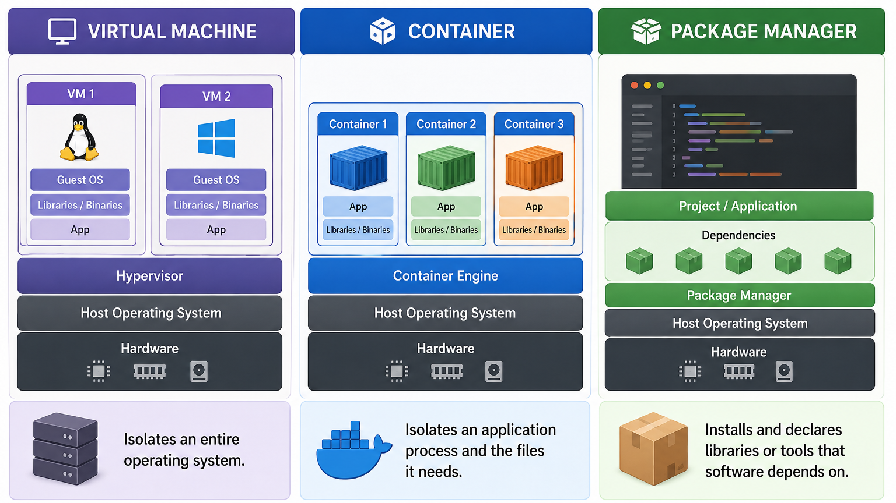

No single tool solves every environment problem. Virtual machines, containers, and package managers each operate at a different layer of the stack — each isolates a different slice. Choosing well means understanding what each one actually controls.

The three main isolation approaches — each solves a different slice of the environment problem.
The four layers and their tools
Tool category
What it controls
Isolation level
Examples
Virtual machine
Full OS image — kernel, drivers, system libraries, everything
Complete (own kernel)
VirtualBox, VMware, Hyper-V, QEMU
Container
Process + filesystem — shares the host kernel
OS-level (shared kernel on Linux; Docker Desktop provides a Linux VM on macOS/Windows)
Docker, Podman, containerd
System package manager
OS-level tools and libraries installed machine-wide
Machine-wide or per-user
apt, yum/dnf, brew
Language package manager
Libraries for a specific language runtime
Per-project (with a virtual env)
pip+venv, npm, cargo, gem
When to reach for each
Virtual machine — you need to test on a genuinely different OS (e.g., running Windows software on a Linux host), or you need a strong security boundary between guest and host.
Container — you need consistent, lightweight, fast-starting environments for development, CI, or deployment. The host OS is Linux or Linux-compatible.
System package manager — you need an OS-level tool (curl, git, jq) available inside a container or on a server.
Language package manager + virtual env — you need to isolate project-specific libraries from each other and from the system Python or Node installation.
Common misconception
A container is not a virtual machine, and a virtual environment is not a container. Each solves a different slice of the environment problem. Using only one of them leaves the other layers uncontrolled.
They complement each other
In practice, you often use all four layers together. A typical Python web application might be:
Developed inside a Docker container (consistent OS layer).
With system packages installed via apt-get in the Dockerfile (e.g., libpq-dev for PostgreSQL).
And Python dependencies isolated in a virtual environment, pinned in requirements.txt.
Optionally tested inside a VM that simulates the production OS before deploying.
Concept check
A colleague says, "I put everything in a venv, so my environment is fully reproducible." What layer are they missing, and what problem could still arise?